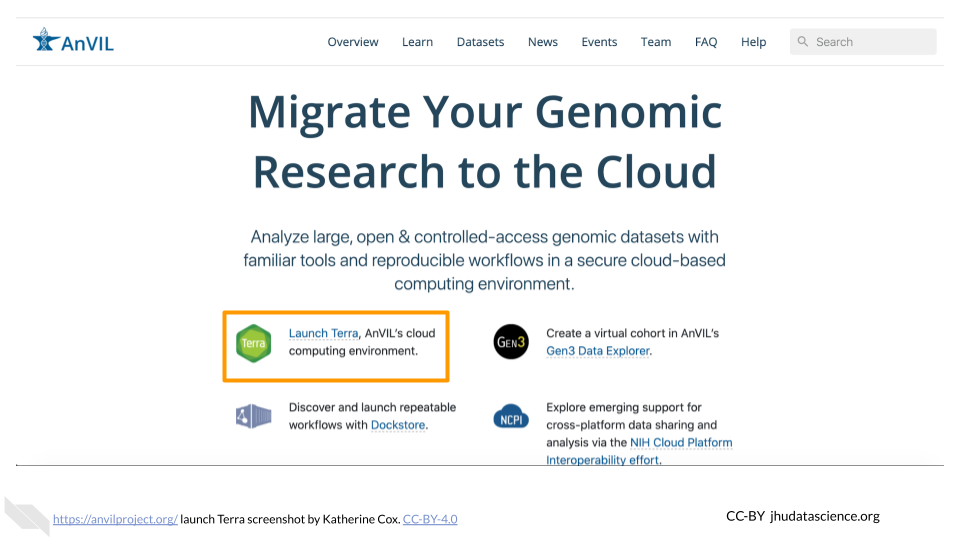

Chapter 3 Getting Started
3.1 Introduction
This chapter explains how to get set up to do your analyses on AnVIL. All activities will be run using RStudio, so if you choose, you can use a different RStudio interface (such as RStudio Cloud or locally installed RStudio).
The Analysis, Visualization, and Informatics Lab-space (AnVIL) is a scalable and interoperable computing resource for the genomics scientific community. AnVIL enables researchers to analyze high-value open and controlled access genomic datasets with popular analysis tools in a secure cloud computing environment. AnVIL also serves as a data commons. It runs on the Google Cloud Platform (GCP) and is sponsored by NHGRI.
In addition to Docker-based analysis workflows, AnVIL supports popular interactive analysis tools such as Jupyter notebooks, Bioconductor, RStudio, and Galaxy.
By operating in the cloud, AnVIL users can scale analyses from a single computer to thousands and securely share data, workflows, and reproducible results with collaborators and colleagues.
3.2 Step 1: Create a Google Account
AnVIL uses Terra to run analyses. Terra operates on Google Cloud Platform, so you’ll need a Google account to make sure your instructor can keep track of any computing costs you accrue.
If you do not already have a Google account that you would like to use for accessing Terra, create one now. Otherwise, please use a Gmail account you have already set up.
If you would like to create a Google account that is associated with your non-Gmail, institutional email address, follow these instructions.
3.3 Step 2: Sign in to Terra
You need to sign into Terra with your Google account to allow your instructor to add you to projects and/or Workspaces associated with your specific class. This is the only way you can launch applications and perform computations on AnVIL. Launch Terra, and you should be prompted to sign in with your Google account.
You can always access Terra by going to anvil.terra.bio, or by clicking the link on the AnVIL home page.
